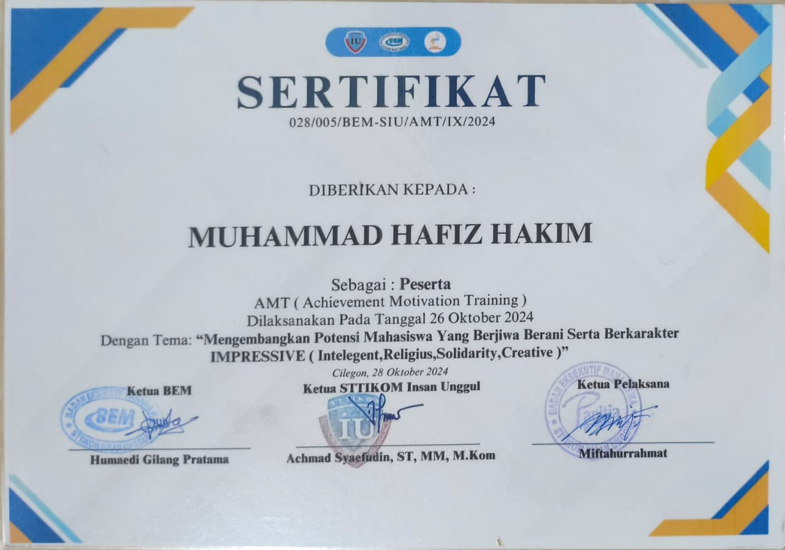
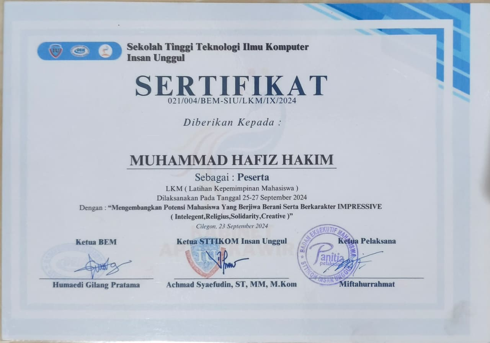
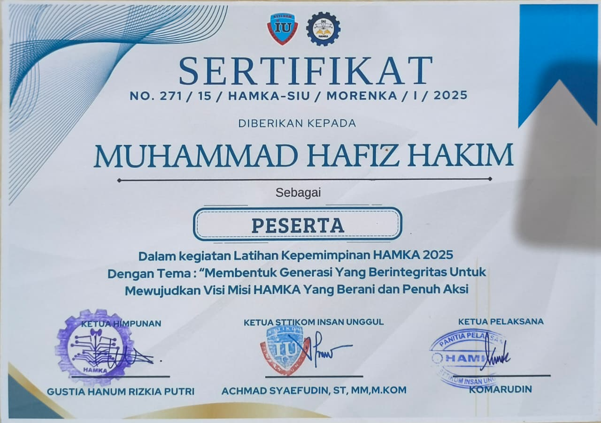
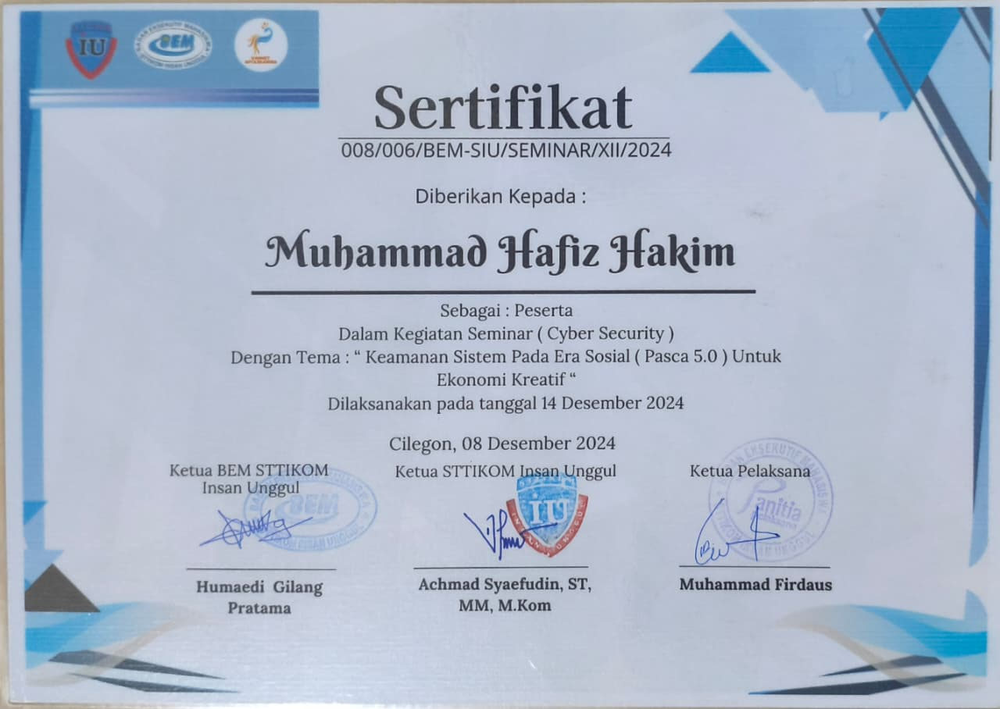
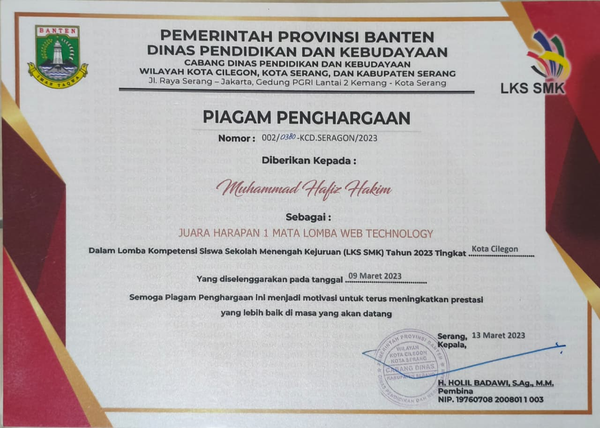
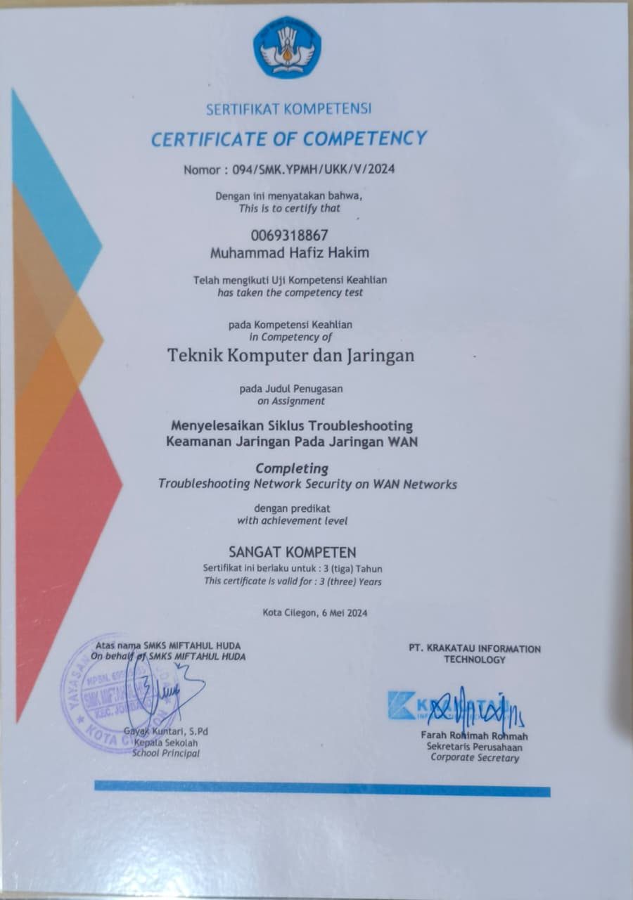
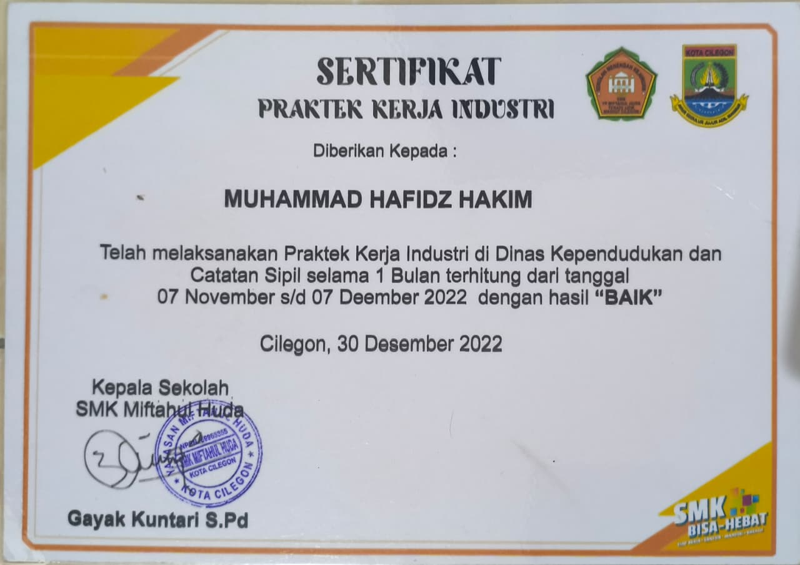
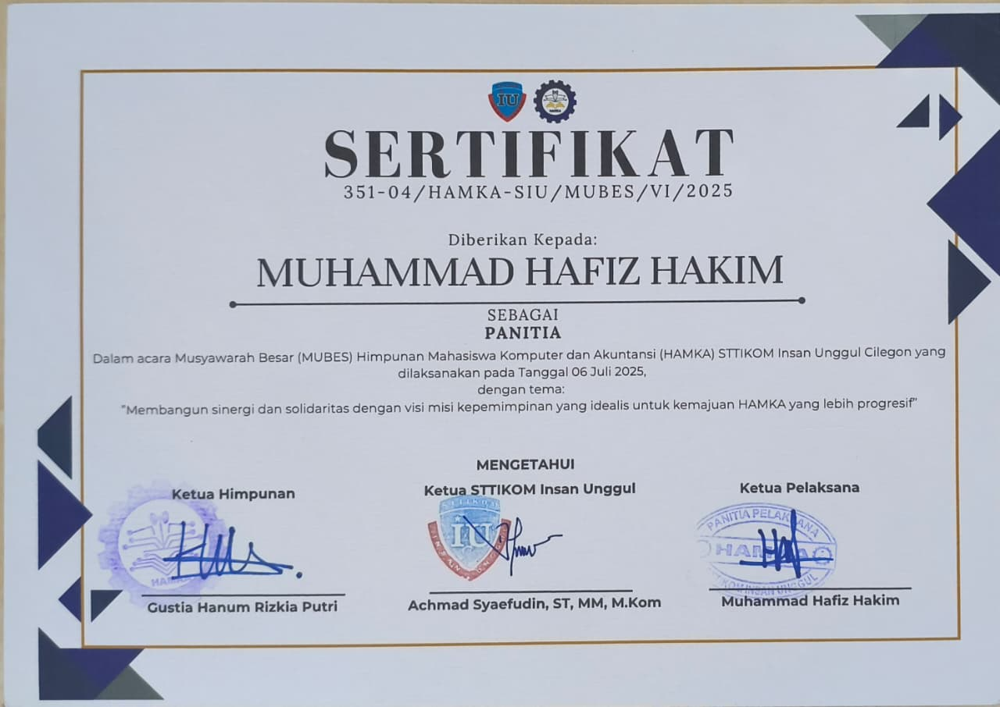
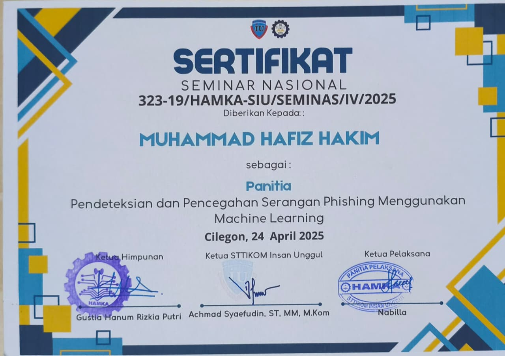

Achievement Motivation Training (AMT)
Peserta AMT yang diselenggarakan BEM STTIKOM Insan Unggul pada 26 Oktober 2024.

Latihan Kepemimpinan Mahasiswa (LKM)
Peserta LKM BEM STTIKOM Insan Unggul pada 25–27 September 2024.

Latihan Kepemimpinan HAMKA
Peserta kegiatan Latihan Kepemimpinan HAMKA 2025.

Seminar Cyber Security
Peserta seminar BEM STTIKOM Insan Unggul bertema keamanan sistem pada era sosial (Pasca 5.0) untuk ekonomi kreatif, 14 Desember 2024.

LKS SMK - Web Technology
Juara Harapan 1 Lomba Web Technology LKS SMK tingkat Kota Cilegon, 2023.

Peringkat 2
Meraih peringkat kedua pada tahun pelajaran 2023/2024.

Uji Kompetensi Keahlian (UKOM)
Kompetensi Teknik Komputer dan Jaringan dengan predikat Sangat Kompeten, 6 Mei 2024.

Praktik Kerja Industri (PKL)
PKL di Dinas Kependudukan dan Catatan Sipil selama satu bulan, 7 November–7 Desember 2022, dengan hasil Baik.

Panitia Musyawarah Besar (MUBES) HAMKA
Bertugas sebagai panitia MUBES HAMKA STTIKOM Insan Unggul pada 6 Juli 2025.

Panitia Seminar Nasional HAMKA
Bertugas sebagai panitia Seminar Nasional tentang pendeteksian dan pencegahan serangan phishing menggunakan machine learning, 24 April 2025.